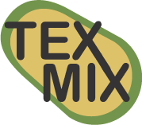

Restaurant App Concept
Tex Mix
This concept was an UX assignment in university to create a prototype for a restaurant app.
I'm a big fan of tex mex so i wanted to create a concept based off of that idea. My idea was for the
user to be able to build their own tex mex sharing meal through an app.
I wanted the name and logo to convey the purpose that you eat tex mex but you mix it up, therefore the two "x" are connected
with each other. The shape in the background resembles an avocado, my favourite tex mex ingredient.